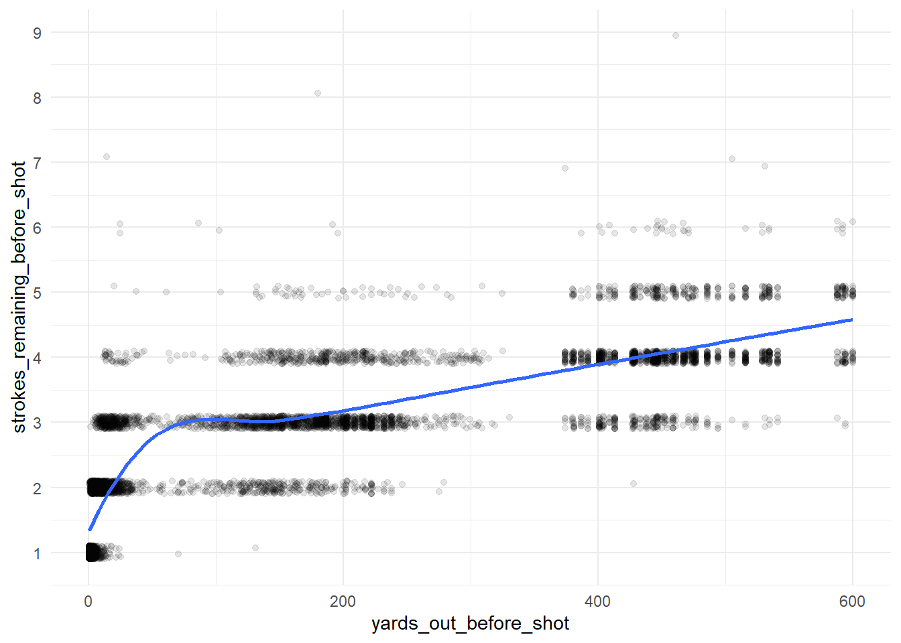
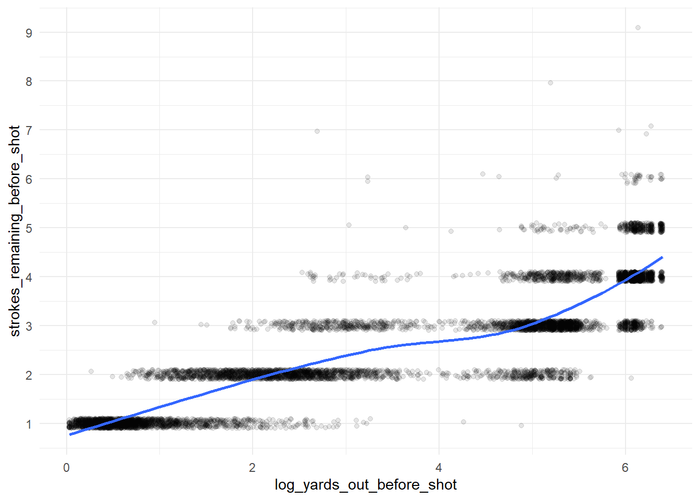

library(tidyverse)
library(tidymodels)Strokes Gained is an interesting method for evaluating golfers, co-created by Columbia Business School professor Mark Broadie.
Strokes Gained co-creator @markbroadie illustrates the statistic using Justin Thomas' final-round eagle at the 2021 #THEPLAYERS. 🔎 pic.twitter.com/LJ6qnp3ooE
— Golf Channel (@GolfChannel) March 8, 2023
Strokes Gained is similar to Expected Points Added (EPA) in football - golfers are evaluated against an “expected” number of strokes remaining after each shot. This “expected” value is based off a predictive model trained on historical data1. In this post, I’ll build my own Strokes Gained model using PGA ShotLink data.
First, I’ll load the cleaned up shot-level data from my previous post.
shot_level <- readRDS("../02_shotlink_explore/shot_level.rds")
cut_colors <- readRDS("../02_shotlink_explore/cut_colors.rds")Intuitively, distance from the hole will probably be the best predictor of strokes remaining.
shot_level %>%
ggplot(mapping = aes(x = yards_out_before_shot,
y = strokes_remaining_before_shot)) +
geom_jitter(width = 0,
height = 0.1,
alpha = 0.1) +
geom_smooth(method = loess,
se = FALSE) +
scale_y_continuous(breaks = 1:10) +
theme_minimal()
#Calculate R-Squared
cor(shot_level$yards_out_before_shot,
shot_level$strokes_remaining_before_shot)^2[1] 0.6659518While there is a certainly a correlation between these numbers, the relationship is not quite linear. A log transformation should clean this up.
shot_level <- shot_level %>%
mutate(log_yards_out_before_shot = log(yards_out_before_shot+1))
shot_level %>%
ggplot(mapping = aes(x = log_yards_out_before_shot,
y = strokes_remaining_before_shot)) +
geom_jitter(width = 0,
height = 0.1,
alpha = 0.1) +
geom_smooth(method = loess,
se = FALSE) +
scale_y_continuous(breaks = 1:10) +
theme_minimal()
#Calculate R-Squared
cor(shot_level$log_yards_out_before_shot,
shot_level$strokes_remaining_before_shot)^2[1] 0.7783551# shot_level <- shot_level %>%
# mutate(log_yards_out_before_shot = log(yards_out_before_shot+1))folds <- group_vfold_cv(data = shot_level,
group = round)
just_log_yards_recipe <- recipe(formula = strokes_remaining_before_shot ~
log_yards_out_before_shot,
data = shot_level)
lm_mod <- linear_reg(mode = "regression",
engine = "lm")
lm_workflow <- workflow() %>%
add_recipe(just_log_yards_recipe) %>%
add_model(lm_mod)
lm_rs <- fit_resamples(object = lm_workflow,
resamples = folds)
lm_rs %>%
collect_metrics() %>%
select(.metric,
mean) %>%
as.data.frame() .metric mean
1 rmse 0.5734776
2 rsq 0.7789109# just_yards_recipe <- recipe(formula = strokes_remaining_before_shot ~
# yards_out_before_shot,
# data = shot_level)
#
# xgb_mod <- boost_tree(mode = "regression",
# engine = "xgboost")
#
# xgb_workflow <- workflow() %>%
# add_recipe(just_yards_recipe) %>%
# add_model(xgb_mod)
#
# xgb_rs <- fit_resamples(object = xgb_workflow,
# resamples = folds)
#
# xgb_rs %>%
# collect_metrics() %>%
# select(.metric,
# mean) %>%
# as.data.frame()# shot_level %>%
# filter(player == 1810,
# round == 1,
# hole == 1) %>%
# select(shot,
# strokes_remaining_before_shot,
# yards_out_before_shot,
# x,
# y)
#
# shot_level <- shot_level %>%
# group_by(player,
# round,
# hole) %>%
# mutate(x_before_shot = lag(x,
# n = 1,
# order_by = shot),
# y_before_shot = lag(y,
# n = 1,
# order_by = shot)) %>%
# ungroup()
#
# folds <- group_vfold_cv(data = shot_level,
# group = round)
#
# with_coords_recipe <- recipe(formula = strokes_remaining_before_shot ~
# yards_out_before_shot +
# x_before_shot +
# y_before_shot +
# hole,
# data = shot_level)
#
# xgb_workflow <- workflow() %>%
# add_recipe(with_coords_recipe) %>%
# add_model(xgb_mod)
#
# xgb_rs <- fit_resamples(object = xgb_workflow,
# resamples = folds)
#
# xgb_rs %>%
# collect_metrics() %>%
# select(.metric,
# mean) %>%
# as.data.frame()# round_1_hole_1 <- shot_level %>%
# filter(!is.na(x)) %>%
# filter(round == 1,
# hole == 1) %>%
# mutate(strokes_remaining = factor(strokes_remaining_after_shot,
# ordered = T))
#
# round_1_hole_1 %>%
# select(x,
# y,
# strokes_remaining) %>%
# ggplot(mapping = aes(x = x,
# y = y,
# color = strokes_remaining)) +
# geom_point(size = 3) +
# coord_equal() +
# labs(title = "1st Hole") +
# theme(axis.text = element_blank(),
# axis.ticks = element_blank(),
# axis.title = element_blank(),
# panel.grid = element_blank())
#
# round_1_hole_1 %>%
# filter(strokes_remaining == 4) %>%
# select(player,
# player_first_name,
# player_last_name,
# shot)Footnotes
These methods have a major shortcoming in that they attribute the entire residual to a single golfer (or the teams involved). This could probably be corrected with a hierarchical/mixed model, but I’ll save that for a future post.↩︎